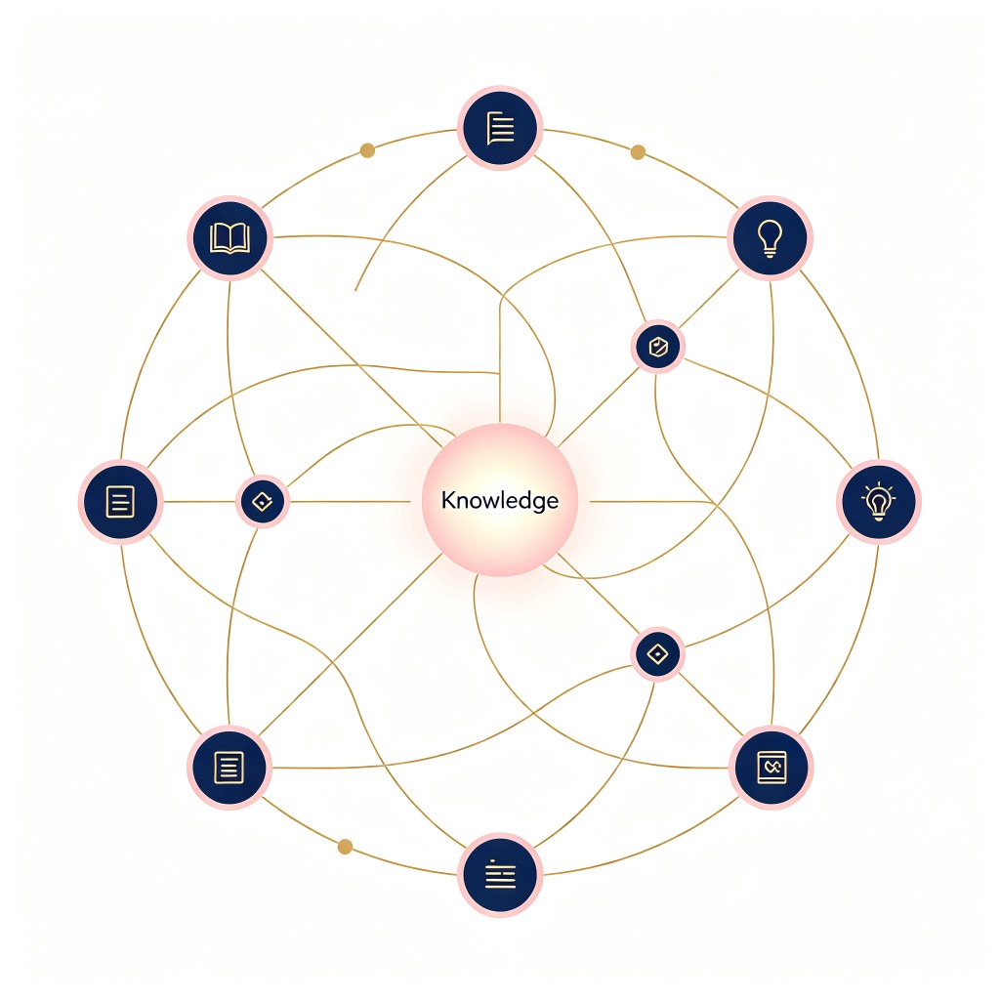
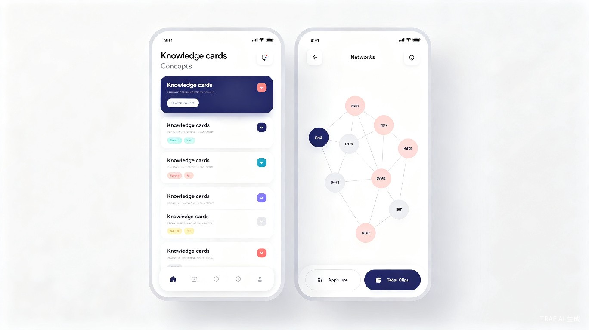

每次学习都是"零基础开始"
AI 让学习变快了，但知识没有"长大"。我们用 AI 读完论文、上完课、啃完文档，
却始终没有一套属于自己的、持续生长的知识系统。
AI 学习的四个"碎片陷阱"
在高校 CS / AI 学习的真实场景中，几乎每个人都遇到过这些痛点：
- 归档是手工活 —— 上完一节课要花 30-60 分钟手动整理笔记
- 笔记是孤岛 —— 不同主题的笔记互不关联，无法跨主题联想
- 方法论不沉淀 —— 课程的方法论、风格、习惯，只存在于当下
- 知识不"长大" —— 学完就归档，归档就遗忘，从未真正累积
重复劳动
每节课后都要把对话、笔记、教案重新整理一次，相同的工序反复执行。
分类混乱
学习时产生的大量概念，无法稳定归位；下次想用时找不到。
缺乏关联
不同课程、不同主题的笔记之间没有建立"双向链接"，无法涌现新理解。
难以输出
从"输入"到"输出"（博客、面试题、复习）之间缺少自动化桥梁。
思澜 —— 你的方法论化 AI 学习伙伴
不重建 LLM 能力，只做 沉淀与复用。让 AI 帮你把每次学到的散落概念，
自动归位到持续生长的个人知识图谱中。
思澜 负责"沉淀与复用"。
与 Claude / Trae 的清晰分工
我们已经站在巨人的肩膀上——不需要重新训练大模型，不需要写代码沙箱。
- 导入式 —— 把 Claude/Trae 的对话、教案、笔记粘进来
- 本地存储 —— 知识库存在你自己的电脑上，隐私可控
- 外部 LLM —— 通过 API 调用 OpenAI / Claude / DeepSeek
- 重点投入 —— 100% 精力在"知识管理"层——自动归类、自动关联

5 步自动化归档，1 次输入多种产物
不是"AI 全自主"，而是"AI 提议 + 用户一键确认"——
你永远掌控自己的知识库，AI 只是高效助手。
flowchart LR
A["📥 导入
对话/教案/代码"] --> B["🔍 AI 拆解
提取概念列表"]
B --> C["🧬 语义匹配 L1
Embedding 找旧知识"]
C --> D["💡 Few-shot 验证 L3
LLM 综合判断"]
D --> E["👤 用户一键确认
接受/调整/拒绝"]
E --> F["🗄️ 写入知识库
生成多产物"]
F --> G["📘 笔记"]
F --> H["📖 复习八股"]
F --> I["🎨 知识图谱"]
F --> J["❓ 自测题"]
style A fill:#eef2ff,stroke:#6366f1,stroke-width:2px
style B fill:#fef3c7,stroke:#f59e0b,stroke-width:2px
style C fill:#eef2ff,stroke:#6366f1,stroke-width:2px
style D fill:#fce7f3,stroke:#ec4899,stroke-width:2px
style E fill:#d1fae5,stroke:#10b981,stroke-width:2px
style F fill:#e0e7ff,stroke:#4f46e5,stroke-width:3px,color:#fff
style G fill:#f1efe9,stroke:#94a3b8
style H fill:#f1efe9,stroke:#94a3b8
style I fill:#f1efe9,stroke:#94a3b8
style J fill:#f1efe9,stroke:#94a3b8
四大核心功能
为高校学生深度学习场景量身打造
多模导入
支持 Markdown 文件、对话粘贴、代码片段、PDF 论文。无论你用什么工具学，都能丝滑导入。
智能归档
L1 语义匹配 + L3 Few-shot 上下文，AI 提议每个概念的"域 + 标签 + 关联"，你一键接受或微调。
知识图谱
1 个概念 = 1 个域 + N 个标签。多维检索让"推理框架算子"也能被 #cuda 找到。
一次输入多种产物
一份原始材料 → 笔记 + 复习八股 + 知识图谱 + 自测题。彻底告别"重复手工"。
AI Harness · 包裹 LLM 的方法论控制框架
4 层 Preference 学习模型。你的"偏好"已经编码在现有知识库里——
不需要独立 preference skill，既有知识就是偏好。
语义层
Embedding 相似度匹配既有知识。新概念"INT4 量化"自动倾向与"FP8 量化"同域。
历史层
记录"接受/调整"历史，统计模式。隐式副产品，未来 prompt 更准的弹药。
上下文层
把相似旧概念作为 few-shot 注入 prompt。LLM "看着"你的风格做判断。
显式规则层
用户手写规则卡："X 类必归 Y 域"。当 L1-L3 都不对时的"逃生舱"。
而在 100 张已归档的知识卡片 里。
一次归档，让概念自然"长"出关联
看思澜如何把"具身 AI 推理框架"学习中的 8 个核心概念，
自动组织成可检索、可演进的知识网络。
graph TD
FP8["FP8 量化"]:::core
NVFP4["NVFP4 量化"]:::core
CUDA["CUDA Graph"]:::core
KERNEL["Kernel Fusion"]:::core
PI05["Pi0.5 VLA"]:::core
BAGEL["BAGEL World Model"]:::core
JEPA["JEPA"]:::core
DIFFUSION["Diffusion"]:::core
FP8 --- NVFP4
FP8 --- KERNEL
KERNEL --- CUDA
PI05 --- BAGEL
PI05 --- DIFFUSION
BAGEL --- JEPA
NVFP4 -.共享标签.-> KERNEL
classDef core fill:#eef2ff,stroke:#6366f1,stroke-width:2px,color:#1e293b
从"学习"到"发布"的一体化管道
思澜不止做归档，更要把你沉淀的知识"再生产"出去——
形成学习闭环的飞轮。
博客自动化（带风格画像）
从你"接受/调整"的行为中学习发文风格，输入主题 → 自动生成符合你语气的小红书 / 知乎博客草稿。
自适应 Curriculum 演化
curriculum 不再是一次性文档。随学习深入，新增的关键问题反向影响路径设计，自动调整后续课程顺序。
多 Skill 联动
与作者的多个教学 skill（如 embodied-ai-infra-teacher）联动：skill 输出自动进入归档，跨 skill 知识共享。
思澜 vs 现有 AI 工具
不是更"花哨"，而是更"深"——方法论骨架、跨项目累积、个人风格学习，
这些是现有工具真正缺位的能力。
真正的护城河
思澜的差异化不是"AI 更强"，而是 "更懂学习这件事"。
- 方法论骨架 —— 按 9 步教学法 / 5 种学习风格结构化
- 跨 skill 累积 —— 真正的"个人第二大脑"
- 风格画像 —— 你的发文风格就是模型的"调音台"
- 端到端管道 —— 从导入到博客发布的完整工作流
